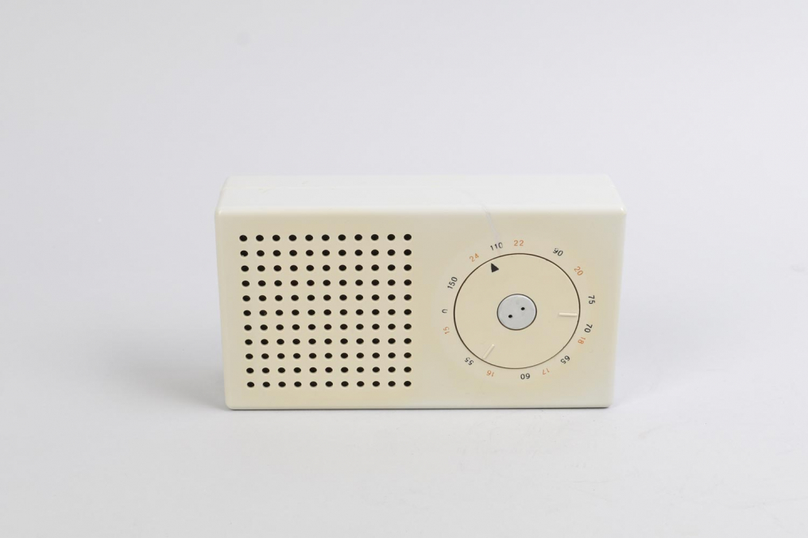
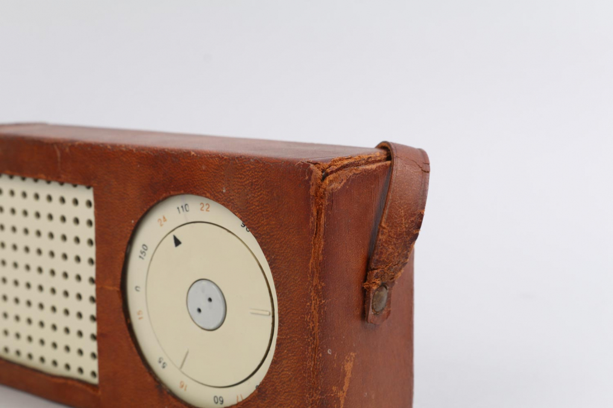

T3 TRANSISTOR
(
1958
)

(
REFERENCE TO CREATE THE IPOD
)
Designed in 1958 for Braun, is a portable radio that influenced the design of later electronic products. Its minimalist aesthetic, based on a rational grid and discreet buttons, optimizes functionality and visual clarity. Its simple yet precise design exemplifies Rams’ philosophy of “less, but better.”

(
POCKET RADIO
)